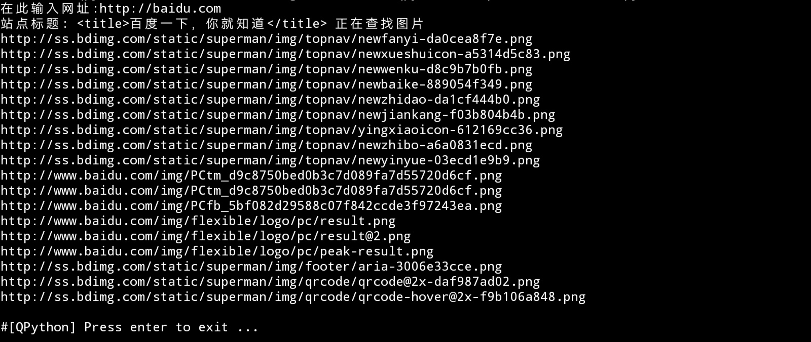

Python实现网络爬虫
2022-03-23 · 技术· PYTHON SPIDER#前言
最近在参与一个数据收集的项目，需要大量获取图像及链接等，用人力显然是完成不过来了，
于是索性就做个爬虫，一劳永逸了。
这里因为项目比较小，对效率要求不大，就选择了使用Python而不是C语言。
(也因为Python用起来更省事)
本文所含代码可直接跳转#代码查看
#效果

效果如上图，即输入网页链接，自动提取所含图片链接，
同时自动转化相对路径为绝对路径，方便下载。
最后每行一个print出来，方便统一存储/下载。
#实现方式
Python在爬虫方面已经十分成熟，这里引用第三方库BeautifulSoup与urllib，若无这些库请下载:
pip install bs4
pip install urllib
*命令行执行即可
依赖库准备完后，引用：
from urllib.request import urlopen,build_opener,ProxyHandler
from bs4 import BeautifulSoup as bf
from urllib import request
import random
此处引用random以及build_opener与ProxyHandler是为了后续反爬，
(毕竟默认UA是Python.Urllib)
接着配置UA池与IP代理池，防止被反爬(若项目规模较小可忽略此步)
# UA
user_agent_list = [
"Mozilla/5.0(Macintosh;IntelMacOSX10.6;rv:2.0.1)Gecko/20100101Firefox/4.0.1",
"Mozilla/4.0(compatible;MSIE6.0;WindowsNT5.1)",
"Opera/9.80(WindowsNT6.1;U;en)Presto/2.8.131Version/11.11",
"Mozilla/5.0(Macintosh;IntelMacOSX10_7_0)AppleWebKit/535.11(KHTML,likeGecko)Chrome/17.0.963.56Safari/535.11",
"Mozilla/4.0(compatible;MSIE7.0;WindowsNT5.1)",
"Mozilla/4.0(compatible;MSIE7.0;WindowsNT5.1;Trident/4.0;SE2.XMetaSr1.0;SE2.XMetaSr1.0;.NETCLR2.0.50727;SE2.XMetaSr1.0)"
]
# 随机UA
headers ={
'User-Agent':random.choice(user_agent_list) ## 随机抽取UA
}
ip_list=[
'125.120.62.26', ##IP池
'66.249.93.118'
]
# IP
ip={
'http':random.choice(ip_list) ##随机抽取IP
}
link = input("在此输入网址:http://")
htmlurl = "https://"+str(link) #链接整合，若input中输入了带http头的链接可忽略此行
req = request.Request(htmlurl,headers=headers) #请求整合
其中，ip_list推荐使用Github@jhao104/proxy_pool开源的IP代理池。*代码中所列IP均为演示作用，若需应用请自行设置
在此就完成了UA与IP的随机分配，反爬基本完成
不过反爬归反爬，也请自觉遵守robot协议，合理利用爬虫
下一步，发出请求：
# 用ProxyHandler创建代理ip对象
pro_han = ProxyHandler(ip)
# 使用build_opener替代urlopen()创建一个对象
opener = build_opener(pro_han)
# 发送请求
res = opener.open(req)
到这里为止，整个请求结束，之后用BeautifulSoup解析: *下面已用bs代指beautifulsoup
obj = bf(res.read(),'html.parser') #解析html
title = str(obj.head.title) #获取标题
print("站点标题:",title,"正在查找图片")
pic_info = obj.find_all('img') #查询img标签
这里也给出不含反爬的请求： (基本同上，唯一的区别是直接用urlopen打开链接)
html = urlopen("https://"+link)
obj = bs(html.read(),'html.parser') #解析html
title = str(obj.head.title) #获取标题
print("站点标题:",title,"正在查找图片")
pic_info = obj.find_all('img') #查询img标签
到这里我们已经成功将网页中所含的所有img标签以列表形式存储在了变量pic_info中，
接下来遍历输出即可：
j = 0 #配置遍历
for i in pic_info:
j += 1
pic = str(i['src']) #转为字符串，方便查询
if "http" not in pic: #检测http头
if "data" in pic: #检测是否为DataURIScheme
continue
else:
if "//" in pic: #格式补全
print("http:"+pic)
else:
if pic[0] == "/": #适配相对路径
print("http://"+link+pic)
else:
print("http://"+link+"/"+pic)
else:
print(pic) #直接print绝对路径
上图套了四个if-else，作用分别是检测是否有http头、是否为内嵌base64图片、是否以//简写路径、是否使用相对路径，
到这里为止，整个程序就结束了
整个示例程序可分为引用-配置-请求-分析-输出5个部分，
除了爬取图片，也可将上面的pic_info = obj.find_all('img')改成其他标签，
比如改成meta可爬取简介，也可在特定站点内通过zaifind_all内添加对应的class(class_="xxx")及id(id_="xxx")来获取对应标签内的信息，
实现更多功能。
#代码
完整版
from urllib.request import urlopen,build_opener,ProxyHandler
from bs4 import BeautifulSoup as bf
from urllib import request
import random
# UA
user_agent_list = [
"Mozilla/5.0(Macintosh;IntelMacOSX10.6;rv:2.0.1)Gecko/20100101Firefox/4.0.1",
"Mozilla/4.0(compatible;MSIE6.0;WindowsNT5.1)",
"Opera/9.80(WindowsNT6.1;U;en)Presto/2.8.131Version/11.11",
"Mozilla/5.0(Macintosh;IntelMacOSX10_7_0)AppleWebKit/535.11(KHTML,likeGecko)Chrome/17.0.963.56Safari/535.11",
"Mozilla/4.0(compatible;MSIE7.0;WindowsNT5.1)",
"Mozilla/4.0(compatible;MSIE7.0;WindowsNT5.1;Trident/4.0;SE2.XMetaSr1.0;SE2.XMetaSr1.0;.NETCLR2.0.50727;SE2.XMetaSr1.0)"
]
# 随机UA
headers ={
'User-Agent':random.choice(user_agent_list)
}
ip_list=[
'209.97.171.128',
'114.250.25.19',
'125.120.62.26',
'66.249.93.118',
'1.202.113.240',
]
# IP
ip={
'http':random.choice(ip_list)
}
link = input("在此输入网址:http://")
htmlurl = "https://"+str(link)
req = request.Request(htmlurl,headers=headers)
# 创建代理ip对象
pro_han = ProxyHandler(ip)
# 使用build_opener创建一个对象
opener = build_opener(pro_han)
# 发送请求
res = opener.open(req)
obj = bf(res.read(),'html.parser') #解析html
title = str(obj.head.title)
print("站点标题:",title,"正在查找图片")
pic_info = obj.find_all('img')
j = 0 #配置遍历
for i in pic_info:
j += 1
pic = str(i['src'])
if "http" not in pic:
if "data" in pic:
continue
else:
if "//" in pic:
print("http:"+pic)
else:
if pic[0] == "/":
print("http://"+link+pic)
else:
print("http://"+link+"/"+pic)
else:
print(pic)
基础版
from urllib.request import urlopen
from bs4 import BeautifulSoup as bs
link = input("在此输入网址:http://")
html = urlopen("https://"+link)
obj = bs(html.read(),'html.parser') #解析html
title = str(obj.head.title)
print("站点标题:",title,"正在查找图片")
pic_info = obj.find_all('img')
j = 0 #配置遍历
for i in pic_info:
j += 1
pic = str(i['src'])
if "http" not in pic:
if "data" in pic:
continue
else:
if "//" in pic:
print("http:"+pic)
else:
if pic[0] == "/":
print("http://"+link+pic)
else:
print("http://"+link+"/"+pic)
else:
print(pic)
#下载
此文章共含2个附件，分别对应 基础版 与 完整版 。
imgspider-pro.py - 1.76kb 预览 | 下载
原创内容使用 知识共享 署名-非商业性使用-相同方式共享 4.0 (CC BY-NC-ND 4.0) 协议授权。